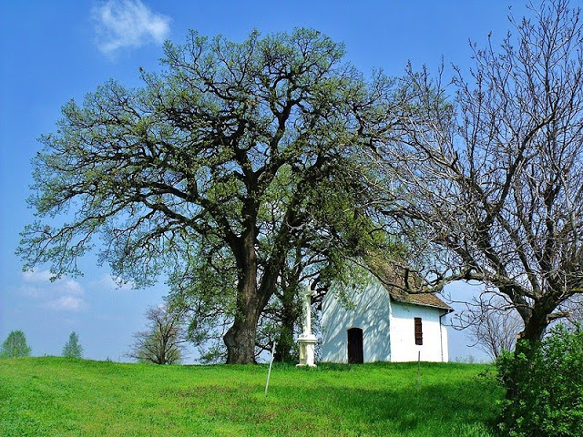
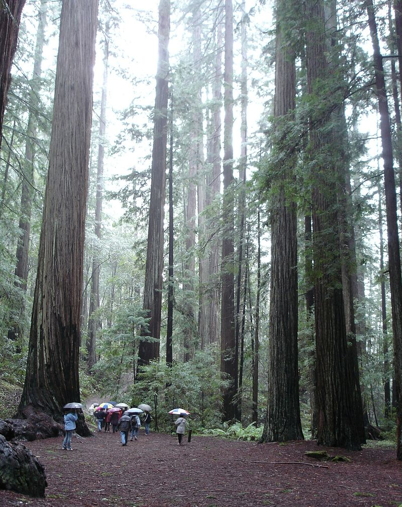

A Szent Orbán-kápolna közvetlen környezetében álló fa, a molyhos tölgyfajhoz tartozik. 2015-ben „Az év fája” címet nyerte el Magyarországon,így 2016-ban részt vett „Az év európai fája” versenyen, amit szintén megnyert. A kápolna mellett álló mindkét tölgyfa a domboldalt egykor borító tölgyerdő hírmondója: a Rákóczi-szabadságharcot követően szerb-horvát telepesek ültették be a dombot tölggyel, s a tölgyesben állatokat makkoltattak. Sümegi József diakónus, helytörténész szerint azonban az öreg tölgy már az 1600-as évek második felében, azaz még a török hódoltság idején élhetett. Német betelepülők építtették a kápolnát a tölgy mögé 1754-ben, hogy hálát adjanak az 1738-as pestisjárvány túléléséért.
Régebben a lombhullató mocsárciprus nemzetséghez sorolták, a sempervirens (örökzöld) nevet megkülönböztetésül kapta. Az angol redwood nevet – amit az óriás mamutfenyőre is használnak, és amit néha tévesen vörösfenyőnek fordítanak – vöröses színű kérgéről kapta nevét. Először Juan Crespi ismertette – ő 1796-ban látta meg ezeket a hatalmas fákat. Tudományos leírására 1824-ig kellett várni, ekkor az első indián ábécét kifejlesztő, a cseroki törzshöz tartozó Sequoyahról a Sequoia nevet kapta.
